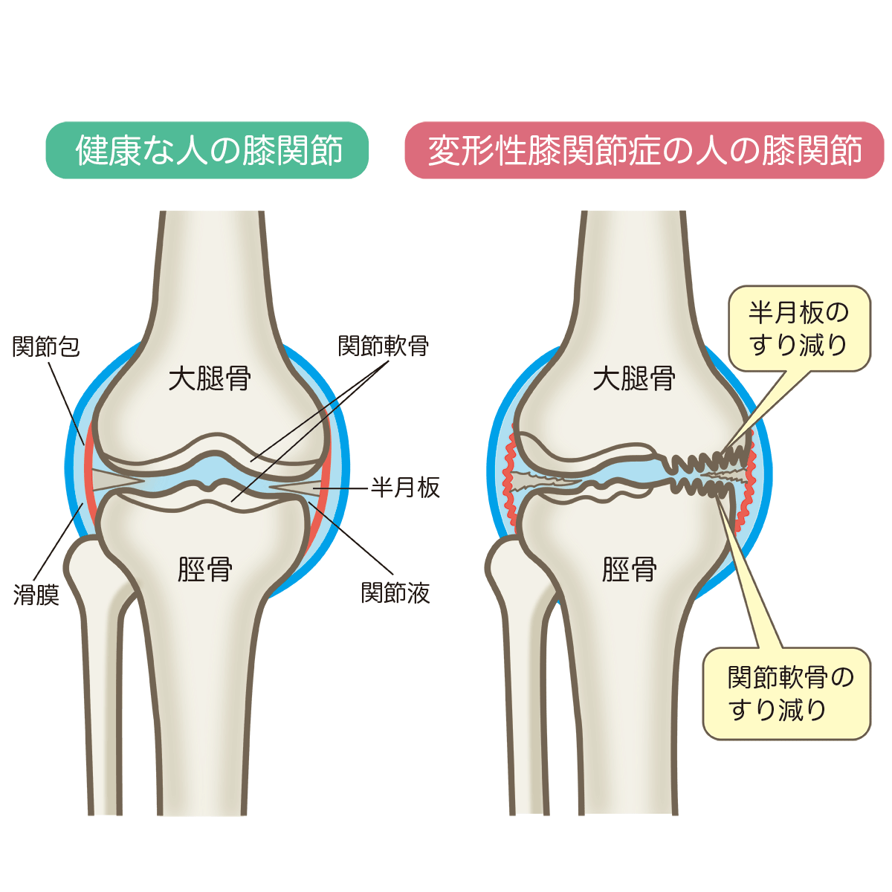

変形性膝関節症
変形性膝関節症とは
変形性膝関節症とは、膝の関節の軟骨が少しずつすり減ったり、関節のクッションの役割を果たす半月板の劣化により、主に歩いた時に膝の痛みが出現する病気です。
一般的には50歳以上の女性に多いとされています。

症状
膝の痛み
関節の中に水が溜まる
症状の進み具合により、初期・中期・末期に分けられます。
初期：立ち上がり、歩きはじめなど、動作の開始時のみに痛みが出る。歩き始めると痛みはなくなる。
中期：正座時や階段の昇り降り、長時間歩いた時に痛みが出る。
末期：安静時にも痛む。変形が目立ち、膝が伸びなくなったり曲がらなくなったりする。歩行が困難となる。
原因
変形性膝関節症の原因は、膝に明らかな原因のない「一次性」と、膝の怪我や病気による「二次性」に分けられます。
一次性の要素としては、肥満（BMI25以上）、女性ホルモンの減少（閉経後の女性）、加齢、遺伝、激しい肉体労働や膝の負担の大きいスポーツの経験、O脚などがあります。
二次性の原因となる主な怪我や病気としては、「半月板損傷」「前十字靭帯損傷」などの膝の外傷、膝周囲の骨折や捻挫、「大腿骨内顆骨壊死」などの病気などがあります。
診断
問診や診察で、膝の内側の痛みがあるかどうか、また関節の動きの範囲、関節の腫れや変形などがないかを確認します。
重症の変形性膝関節症はX線（レントゲン）検査で診断がつきますが、関節の軟骨はレントゲン写真では見えないため、必要によりMRI検査などを行います。
治療
症状が軽い場合は、まず薬物療法や運動療法を行います。
薬物療法としては、痛み止めの内服薬や外用薬を使います。
必要に応じて、膝関節内にヒアルロン酸の注射などをします。
運動療法としては、大腿四頭筋強化訓練、関節可動域改善訓練などの運動器リハビリテーション、膝を温める物理療法などを行います。
足底板（インソール）などの装具を作成することもあります。
また、定期的な有酸素運動により体重を減らすことも有効な手段です。
変形性膝関節症は運動療法の効果が証明されている病気の一つであり、自覚症状が大きく改善することも少なくありません。
薬物治療や運動療法でも症状が改善されない場合は、手術治療も検討します。
手術治療には高位脛骨骨切り術（骨を切って変形を治す手術）、人工膝関節置換術などがあります。
どの手術が適切かは、症状や年齢、関節の状態などを総合して判断します。
参考文献
https://www.joa.or.jp/public/sick/condition/knee_osteoarthritis.html
https://www.juntendo.ac.jp/hospital/clinic/seikei/about/disease/kanja02_01.html
https://www.japanpt.or.jp/upload/jspt/obj/files/guideline/11_gonarthrosis.pdf
https://jcoa.gr.jp/wp-content/uploads/2021/03/koa.pdf
https://www.jstage.jst.go.jp/article/naika/106/1/106_75/_pdf/-char/ja
http://nara.med.or.jp/for_residents/12667/